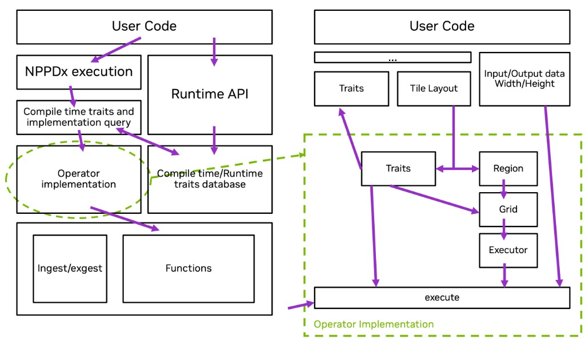

Traits#
NPPDx fused kernels are built by composing operators at compile time. Each step is a
composed operator expression such as IngestOperation. Traits are constexpr accessors that
inform the compiler how to build the code – format, tile size, halo, and launch geometry – from
those composed types. The library uses the same information internally to pick backend
implementations, cell layouts, and shared-memory footprints when generating specialized device
code. Terminology (operator, compose, steps, fused kernel) is defined in Terminology.
Most traits are evaluated entirely at compile time. Invalid or incomplete steps fail
with static_assert during instantiation rather than at runtime.
Architecture – halos at compile time#
NPPDx is a Dx-style library for image processing: operators compose at compile time, and the library counts halos while compiling so ingest loads the right border, neighborhood steps know their valid tile bounds, and fused kernels stay consistent without runtime halo bookkeeping.
New functionality extends the same model:
Ingest/exgest formats: add a
packing_formatand specialize the format backend (packing_format_traitsand I/O implementations).Operators: add a
functiontag, parameter operators, and anoperation_operator_traitsspecialization.Backend algorithms: plug implementations into the operator database (
operation_database.hpp) without changing user kernel structure.
Architecture overview#
The diagram below shows how user code connects to traits, operator selection, and device execution. The left panel is the library-level view; the right panel zooms into Operator implementation (the dashed region on the left).
{kind=link}

Figure 4 NPPDx architecture: traits database, operator implementation, and execute.#
Left panel – from user code to operator implementation#
User code: composes processing steps with operators, launches CUDA kernels, and passes image width and height at runtime.
NPPDx execution: the compile-time type formed when a processing step is complete (
SM,Block(), and aFunctionorInputOutputwith format) – for exampleIngestOperation.Runtime API: the
execute()overloads on that type, called from device code inside the kernel.Compile-time traits and implementation query: constexpr accessors such as
tile_size_of_v,local_halo_of_v, andis_supported_vthat read the composed expression before launch.Compile-time / runtime traits database: per-operator and per-format trait specializations (
operation_operator_traits,packing_format_traits) plus the operator database (operation_database.hpp) that maps a trait query to a concrete backend implementation.Operator implementation: the selected ingest/exgest or function backend for the configured processing step (expanded on the right).
Ingest/exgest and Functions: the two families of operators the database chooses from.
Right panel – inside operator implementation#
The zoomed view shows what happens for a single operator once the composed expression (...)
and runtime image size are known:
Composed operators (
...): the+-assembled operators (TileSize,Function,BoxBlur, formats, and so on). These feed traits and tile layout at compile time.Input/Output data width/height: runtime image dimensions passed into
execute(); used with tile size to determine how many tiles cover the image.Traits: compile-time values extracted from the processing step (format, halo, SM, block geometry, parameter operators).
Tile layout: nominal tile size plus memory and cumulative halos; defines the extended region each block must load or process.
Region: the valid tile interior and halo bounds derived from layout (see
detail/database/region.hpp).Grid: launch grid dimensions from tile layout and image width/height (
calculate_grid_dim).Executor: the normalized execution operator and backend
impltype chosen from the traits database (cell configuration, block threads, specialized device code).execute: the device entry point that combines the executor, compile-time traits, runtime width/height, and buffers. The arrow from the left panel is the call from user kernel code into the library
execute()method.
In short: operators and tile layout determine traits at compile time; traits and image size
determine region, grid, and executor; execute runs the constructed fused kernel.
How traits connect operators to device code#
The list below maps the right-hand panel to headers in the repository:
Operators: user-facing knobs (
TileSize,BoxBlur<3, 3>,InputFormat, …).Trait queries: extract configured values from the composed type (
tile_size_of_v,local_halo_of_v, …) intraits/nppdx_traits.hpp.Operator traits: per-operator metadata in
operation_operator_traitsused to derive halos, shared-memory storage slots, and parameter-operator wiring to backends.Launch traits: a complete processing step (for example
IngestOperation) exposesblock_dim,calculate_grid_dim,elements_per_thread, and anexecute()implementation selected from the operator database.
The operator database (operation_database.hpp) uses SM architecture, packing format, tile
geometry, and halo requirements to choose a cell configuration (how threads map pixels
inside a tile) and block size. That selection is not a separate user API; it is driven by the
traits computed from the processing step.
Query traits#
Trait naming#
NPPDx follows the usual C++ trait suffix convention (as in std::is_same_v /
std::is_same_t):
foo_of<Description>– the trait struct.foo_of_v<Description>– the trait’s compile-time value (foo_of<Description>::value). Use for scalars, enums, and value types such asHalo4,uint2, anddim3.foo_of_t<Description>– the trait’s type (typename foo_of<Description>::type). Use when declaring variables, template parameters, or storage typedefs.
Header traits/nppdx_traits.hpp (included from nppdx/traits.hpp) provides constexpr
queries on any composed operator expression. Common accessors:
Trait |
Meaning |
|---|---|
|
commonDx data-type enum from the |
|
C++ type used for on-tile processing; currently |
|
Target SM architecture from |
|
Thread-block dimensions from |
|
Nominal tile size as |
|
Packed I/O format (ingest uses |
|
|
|
Image-processing function tag from |
|
The parameter operator paired with the function or I/O tag (for example |
|
Per-operator neighborhood support (see Halos and step order). |
|
Values from |
|
Register footprint per thread (derived from cell configuration; see internal cells below). |
|
Tuple typedefs ( |
|
Convenience aliases for element |
These traits are the low-level building blocks. Host code can query them directly; the
Image Processing Using NPPDx walkthrough also shows the same values as static members on types such as
IngestOperation (block_dim, input_storage, and so on).
Operator traits#
Each concrete operator kind specializes an operator traits class template –
operation_operator_traits<TagType> in operators/operation_operator_traits.hpp. That
template is declared once per operator and currently dictates how subsequent traits for each
processing step are derived (halo, storage layout, parameter-operator type, database lookup).
An operator in this model has three layers:
The operator itself: the
Function<function:: ...>tag (or ingest/exgest direction tag) paired with execution; oversees traits and parameters in the composed processing step.Operator parameters: expression-level parameter operators (
BoxBlur<3, 3>,GaussianBlur<20>,Resize<J, K, Method>, …) that supply compile-time values such as kernel size or Gaussian radius.Operator traits: low-level properties derived from those parameters (local halo, tap count, validity), exposed through
operation_operator_traitsand trait queries such aslocal_halo_of_v.
Each operation_operator_traits specialization provides:
op_type_val: whichoperator_typeenumerator corresponds to the parameter operator.default_op: placeholder parameter operator used when a processing step omits explicit values.get_local_halo(value): neighborhood radius required for the configured parameters.get_storage_config(value, layout): shared-memory slot sizes for input, output, and temp buffers (see Shared-memory storage traits).get_output_nominal_tile(value, input_nominal): nominal tile size after this processing step (resize changes geometry; other steps typically return the input nominal unchanged).
For example, operation_operator_traits<function_tag<function::box_blur>> maps
BoxBlur<W, H> to a uniform halo of (W - 1) / 2 and
(H - 1) / 2. operation_operator_traits<function_tag<function::gaussian_blur>> derives
halo from the discrete FIR tap count for GaussianBlur<RadiusTenths, TailWidth>. Pointwise
steps such as color_convert and gamma report an empty local halo.
local_halo_of<Description> dispatches through these specializations using the function or
I/O tag and the parameter operator found in the processing step. Adding a new operator requires a
new function tag, parameter operators, a backend implementation, and a matching
operation_operator_traits specialization so halos and database lookup stay consistent.
Packing format traits#
Ingest and exgest backends need format-specific facts: channel count, bits per channel,
subsampling, planar vs packed layout, and storage type. packing_format_traits<Format> in
operators/formats.hpp centralizes those properties. Most enumerators use the general
template; packed exceptions (for example rgb10, y210, uyvp, v210) specialize
where stride or storage differs from the default.
Format traits feed tile validity checks (is_valid_tile_v) and I/O cell configuration. They
are rarely queried directly from application code, but they explain why some format and tile-size
combinations are rejected at compile time.
Launch and execution traits#
When a processing step is complete, the type behind execute() (see
Execution Methods (Device API) – Device API) exposes host-side launch metadata as static
members:
Member |
Role |
|---|---|
|
CUDA thread-block size for the kernel launch. |
|
Nominal tile width and height (matches |
|
Grid dimensions from image size and tile size. |
|
Dynamic shared memory bytes for this processing step’s |
|
Intermediate values per thread on Register-only APIs. |
|
Neighborhood support for this processing step. |
|
Tile extent including halo for shared-memory allocation. |
|
|
|
Tuple typedefs of |
Prefer calculate_grid_dim over hand-rolled grid arithmetic. For a kernel that uses one
processing step’s shared-memory layout, Op::shared_memory_size is sufficient for the launch’s
third <<<...>>> argument. For fused kernels that carve out multiple tile buffers from
several processing steps in one extern __shared__ allocation, use
shared_memory::compute_total_tile_storage (see TileStorage utilities). See Image Processing Using NPPDx
for launch examples.
TileStorage utilities#
Header tile_storage.hpp defines the leaf shared-memory types; shared_memory.hpp adds
helpers such as compute_total_tile_storage and compute_operation_storage to size
dynamic shared memory. Typical workflow:
Include
nppdx/shared_memory.hpp.Alias storage types from traits (
input_storage_of_t,output_storage_of_t, …).In the kernel, call
shared_memory::slice_into_tile_storage<Types...>(smem)to bind typedTileStorageviews to offsets inside dynamic shared memory.On the host, size the launch with
Op::shared_memory_sizewhen one step’s layout covers the allocation, orshared_memory::compute_total_tile_storage<Types...>()when several processing steps share oneextern __shared__block (andcudaFuncAttributeMaxDynamicSharedMemorySizewhen required).
Core types:
shared_memory::ChannelSlice<T, Width, Height>– one channel plane in shared memory.shared_memory::TileStorage<ChannelSliceType, NumChannels>– multi-channel tile;from_memory(unsigned char*)placement-news channel data into a sub-range ofsmem.shared_memory::copy_tile_storage(src, dst)– block-wide copy between twoTileStorageobjects (ends with__syncthreads()).
shared_memory::compute_operation_storage<Description>() returns the aligned byte count for
one processing step’s inputs, outputs, and temp slots combined – the same value as
Description::shared_memory_size. Use compute_total_tile_storage when several processing
steps share one allocation in a fused kernel.
See 03_area_operation/box_filter.cu and 04_resize/fused_resize.cu for fused-kernel
patterns, and 00_introduction/introduction_example_shared_memory.cu for ingest/exgest only.
Halos and step order#
Halo and storage traits mix configured operators (MemoryHalo, CumulativeHalo,
TileSize) with derived values computed from operator parameters and layout:
Trait |
What it means |
Who sets it |
|---|---|---|
|
Neighborhood support for one step (blur radius, median window, resize filter reach, …). |
Derived from the function tag and parameter operator via
|
|
In-tile buffer border – shared-memory tile capacity for this processing step. |
Configured with |
|
Full cumulative halo – overlap between tiles and extended ingest region for tiled processing – or the remaining halo on later steps. |
Configured with |
|
|
Derived from |
For fused kernels, compose local halos from each neighborhood step into the
cumulative halo – overlap between tiles and extended ingest region for tiled processing
(the total does not
change when neighborhood steps are reordered). Set MemoryHalo and CumulativeHalo on
each step as needed; see 03_area_operation/box_filter.cu and
04_resize/fused_resize.cu. Use scale_halo(halo, num, den) when resize scale factors
affect halo geometry.
Reordering image processing steps changes numerics, valid tile bounds, and shared-memory layout. See Achieving High Performance for tuning guidance.
Completeness and support checks#
Traits also gate whether a processing step can be instantiated:
is_complete_npp_v<Description>: mandatory operators are present (SM,Block(), and either aFunctionorInputOutputwith the matching format operator).is_supported_v<Description, Architecture>: tile size, format, and architecture pass internal validity checks (shared-memory limits, cell alignment, minimum SM).
Unsupported combinations fail at compile time when the step’s type is being composed. Use
is_supported_v or the shipped examples to probe a configuration before building a kernel.
User-facing vs derived traits#
Not every trait corresponds to an operator in the public API:
Configured by operators |
Derived by the library |
|---|---|
|
Tile size, recommended block thread count, |
|
Backend implementation type, |
|
Ingest/exgest load and store paths from |
Optional |
|
TileSize and block geometry are the primary tuning knobs exposed to applications. Cell
mapping and halo propagation are internal but surface through the launch traits above.
Example: querying traits before launch#
Register-only API (no shared-memory tile buffers):
using Ingest = decltype(
InputOutput<input_output_direction::ingest>() +
InputFormat<packing_format::rgb24>() +
TileSize<48, 48>() +
Block() +
SM<900>());
static_assert(is_complete_npp_v<Ingest>);
static_assert(is_supported_v<Ingest, 900>);
constexpr auto tile = tile_size_of_v<Ingest>;
constexpr auto format = packing_format_of_v<Ingest>;
const dim3 grid = Ingest::calculate_grid_dim(width, height);
const dim3 block = Ingest::block_dim;
image_processing_kernel<Ingest, Exgest>
<<<grid, block>>>(d_in, d_out, width, height);
Shared-memory API fused kernel (ingest \(\rightarrow\) box blur \(\rightarrow\) exgest):
using InputTileStorage = input_storage_of_t<Ingest>;
using BlurTileStorage = output_storage_of_t<BoxBlur>;
constexpr size_t smem_size =
shared_memory::compute_total_tile_storage<InputTileStorage, BlurTileStorage>();
box_blur_kernel<Ingest, BoxBlur, Exgest, InputTileStorage, BlurTileStorage>
<<<grid, block, smem_size>>>(d_in, d_out, width, height);
Inside box_blur_kernel, slice_into_tile_storage<InputTileStorage, BlurTileStorage>(smem)
returns typed TileStorage views passed to each processing step’s execute() overload.
See also#
Operators: operators that populate operator traits.
Processing overview: ingest, exgest, pointwise, and area step descriptions.
Image Processing Using NPPDx: ingest/exgest walkthrough and shared-memory fused-kernel patterns.
Achieving High Performance: how step order and tile geometry affect derived traits.